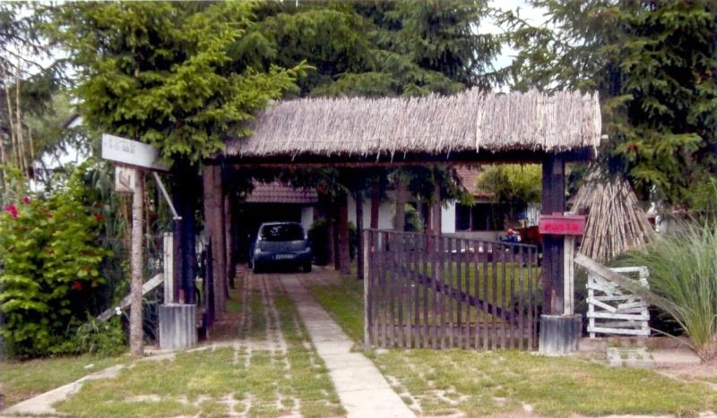
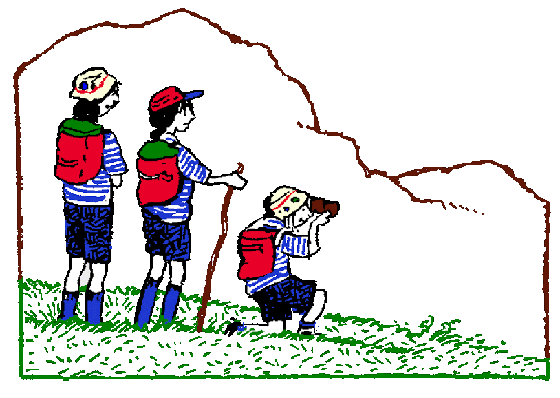

Jellemzők
Telefon: +36-10-11-22-33
email: kiado@matrai-haz.hu
Részletes leírás és képek:
A ház lenti részén találhatóak a közös helyiségek, és két szoba. Az emeleten helyezkedik el további két szoba. Minden szobában két ágy található. Ágyneműt és törölközőt biztosítunk. Az étkezőben 8 személyes asztal áll, a konyhában 8 fő részére található étkészlet.
|  | |
|
|
A ház legalább két éjszakára foglalható, rövidebb időre nem!
Áraink:
| Időtartam | 1-4 fő esetén | 5-8 fő esetén |
|---|---|---|
| 2 éjszakára | 48 000 Ft | 64 000 Ft |
| 3 éjszakára | 67 500 Ft | 90 000 Ft |
| 4 éjszakára | 84 000 Ft | >112 000 Ft |
| 5 éjszakára | 97 500 Ft | 130 000 Ft |
| 6 éjszakára | 108 000 Ft | 144 000 Ft |
| 7 éjszakára | 115 000 Ft | 154 000 Ft |
7 éjszakánál hosszabb tartózkodás esetén kérje egyedi ajánlatunkat!
Programajánló: